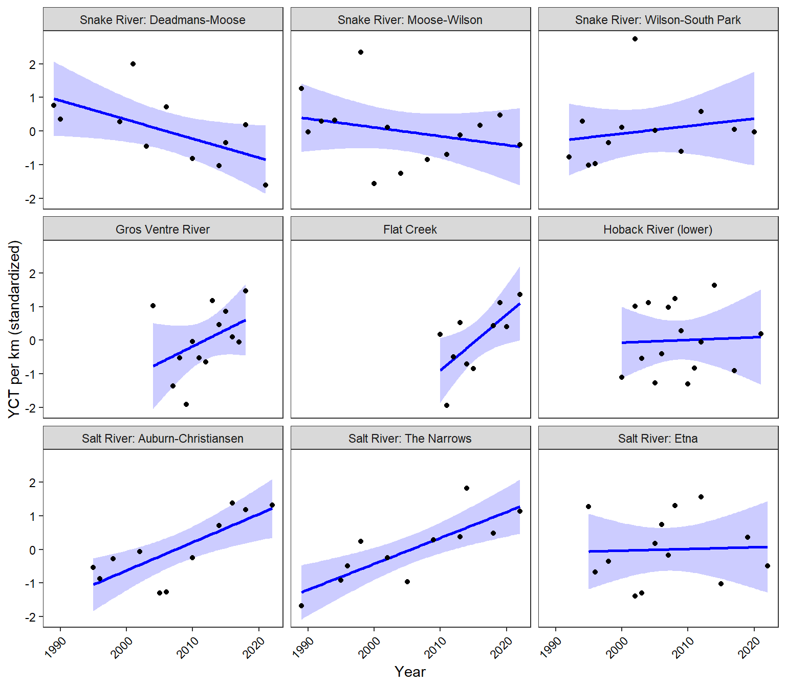
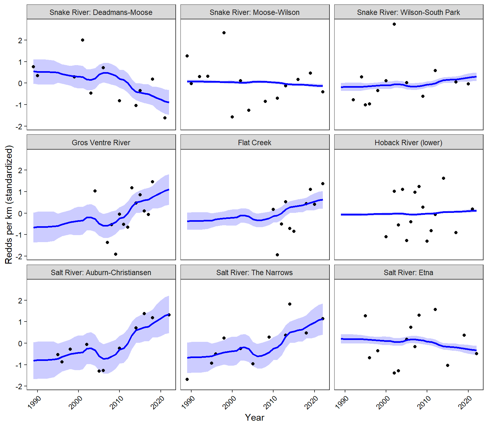
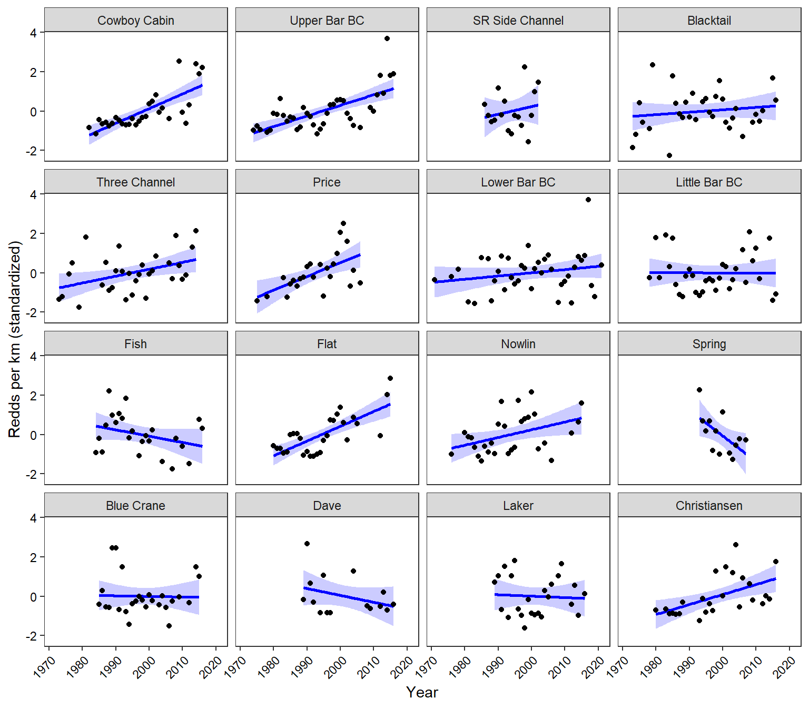

Purpose: use linear regression and Dynamic Factor Analysis (Zuur et al., Ohlberger et al. 2016) to characterize long-term trends in YCT population estimates and redd counts.
popest %>%group_by(site) %>%mutate(pescaled =scale(Nperkm_total)) %>%ungroup() %>%ggplot(aes(x = year, y = pescaled)) +geom_smooth(method ="lm", se =TRUE, color ="blue", fill ="blue", alpha =0.2) +geom_point() +facet_wrap(~site) +xlab("Year") +ylab("YCT per km (standardized)") +theme_bw() +theme(panel.grid =element_blank(), axis.text =element_text(color ="black"), axis.text.x =element_text(angle =45, vjust =1, hjust=1))

3.1.2 Dynamic Factor Analysis
Use dynamic factor analysis, DFA, to extract common trends from the population estimate data and estimate the loading of each population onto each trend (Zuur et al. 2003, Ohlberger et al. 2016).
Fit MARSS models with 1-3 underlying trends and equal variance-covariance structure (these models tended to have the greatest support when compared against other var./cov. structures using AIC). Note that models with 4+ trends fail to converge/throw errors.
Code
cntl.list =list(minit =200, maxit =5000, allow.degen =FALSE)fit_1 <-MARSS(popest_mat_formatted, model =list(m =1, R ="equalvarcov"), form ="dfa", silent =TRUE, control = cntl.list)fit_2 <-MARSS(popest_mat_formatted, model =list(m =2, R ="equalvarcov"), form ="dfa", silent =TRUE, control = cntl.list)fit_3 <-MARSS(popest_mat_formatted, model =list(m =3, R ="equalvarcov"), form ="dfa", silent =TRUE, control = cntl.list)
Fit MARSS models with 1-4 underlying trends and differnt variance/covariance structures, then compare using AICc. Note that using “unconstrained” model structure leads to errors.
Use model selection to determine number of underlying trends: 1-trend model is best.
Use varimax rotation to determine trends and loadings
Code
# get the inverse of the rotation matrixZ.est <-coef(topmod, type ="matrix")$ZH.inv <-1if (ncol(Z.est) >1)H.inv <-varimax(coef(topmod, type ="matrix")$Z)$rotmat# rotate factor loadingsZ.rot <- Z.est %*% H.inv# rotate trendstrends.rot <-solve(H.inv) %*% topmod$statestrends.rot.low <- trends.rot - (solve(H.inv) %*% (topmod$states.se*1.95))trends.rot.up <- trends.rot + (solve(H.inv) %*% (topmod$states.se*1.95))# Add CIs to marssMLE objecttopmod <-MARSSparamCIs(topmod)# Use coef() to get the upper and lower CIsZ.low <-coef(topmod, type ="Z", what ="par.lowCI")Z.up <-coef(topmod, type ="Z", what ="par.upCI")Z.rot.up <- Z.up %*% H.invZ.rot.low <- Z.low %*% H.invdf <-data.frame(est =as.vector(Z.rot),conf.up =as.vector(Z.rot.up),conf.low =as.vector(Z.rot.low) )
Plot (rotated) common trend and loadings. This figure shows the common trend (left panel) and population-specific trend loadings (right panel; i.e., the extent to which each time series maps onto the common trend). The common trend shows a general pattern of increasing population density, particularly since ca. 2006. This increase is largely driven by the Gros Ventre, Salt River Auburn-Christiansen, and Salt River Narrows populations. In contrast, the Snake River Deadmans-Moose population shows the opposite pattern: a long-term decline. All other populations map weakly onto the common trend (i.e., stable trend in population density).
Plot population-specific trend estimates. These are basically the loadings multiplied by the common trend and show trend estimates for each population individually.
Code
# run kalman filterkf <-MARSSkfss(topmod)# extract model componentsZ_mat <-coef(topmod, type ="matrix")$Z # Loadings (n_series x n_trends)xtT <- kf$xtT # States (n_trends x time)VtT <- kf$VtT # State covariance matrices (n_trends x n_trends x time)# compute fitted values and standard errorsn_series <-nrow(Z_mat)n_time <-ncol(xtT)fitted_vals <- Z_mat %*% xtT # n_series x timese_vals <-matrix(NA, n_series, n_time) # standard errorsfor (t in1:n_time) { Vt <- VtT[, , t] Var_yt <- Z_mat %*% Vt %*%t(Z_mat) se_vals[, t] <-sqrt(diag(Var_yt)) # std dev for each series at time t}# construct 95% confidence intervalsupper_band <- fitted_vals +1.96* se_valslower_band <- fitted_vals -1.96* se_vals# plotas_tibble(t(fitted_vals)) %>%mutate(year = popest_mat$year) %>%gather(key ="stream", value ="fitted", -year) %>%mutate(stream =factor(stream, levels = pops)) %>%left_join(as_tibble(t(upper_band)) %>%mutate(year = popest_mat$year) %>%gather(key ="stream", value ="fitted_up", -year) %>%mutate(stream =factor(stream, levels = pops))) %>%left_join(as_tibble(t(lower_band)) %>%mutate(year = popest_mat$year) %>%gather(key ="stream", value ="fitted_low", -year) %>%mutate(stream =factor(stream, levels = pops))) %>%left_join(as_tibble(t(popest_mat_formatted)) %>%mutate(year = popest_mat$year) %>%gather(key ="stream", value ="observed", -year) %>%mutate(stream =factor(stream, levels = pops))) %>%ggplot() +geom_ribbon(aes(x = year, ymin = fitted_low, ymax = fitted_up), fill ="blue", alpha =0.2) +geom_point(aes(x = year, y = observed)) +geom_line(aes(x = year, y = fitted), color ="blue", size =1) +facet_wrap(~stream) +xlab("Year") +ylab("Redds per km (standardized)") +theme_bw() +theme(panel.grid =element_blank(), axis.text =element_text(color ="black"), axis.text.x =element_text(angle =45, vjust =1, hjust=1))

3.2 Redd Counts
Format redd count data
Code
# spring creek redd countsreddcts <-read_csv("C:/Users/jbaldock/OneDrive - DOI/Documents/WyACT/Snake River Assessment/Population data/ReddCounts_WGFD_1971-2021_cleaned.csv") %>%filter(stream !="Cody") %>%mutate(stream =recode(stream, "3 Channel"="Three Channel", "Snake River Side Channel"="SR Side Channel")) %>%mutate(stream =factor(stream, levels =c("Cowboy Cabin", "Upper Bar BC", "SR Side Channel", "Blacktail","Three Channel", "Price", "Lower Bar BC", "Little Bar BC", "Fish", "Flat", "Nowlin", "Spring", "Blue Crane", "Dave", "Laker", "Christiansen")))reddcts_mat <- reddcts %>%select(year, stream, reddsperkm) %>%spread(key = stream, value = reddsperkm)reddcts_mat_formatted <-t(scale(reddcts_mat[,c(2:17)]))
3.2.1 Linear trends
Simple trends using linear regression
Code
reddcts %>%group_by(stream) %>%mutate(reddsscaled =scale(reddsperkm)) %>%ungroup() %>%ggplot(aes(x = year, y = reddsscaled)) +geom_smooth(method ="lm", se =TRUE, color ="blue", fill ="blue", alpha =0.2) +geom_point() +facet_wrap(~stream) +xlab("Year") +ylab("Redds per km (standardized)") +theme_bw() +theme(panel.grid =element_blank(), axis.text =element_text(color ="black"), axis.text.x =element_text(angle =45, vjust =1, hjust=1))

3.2.2 Dynamic Factor Analysis
Use dynamic factor analysis, DFA, to extract common trends from the redd count data and estimate the loading of each population onto each trend (Zuur et al. 2003, Ohlberger et al. 2016).
Fit MARSS models with 1-4 underlying trends and equal variance-covariance structure (these models tended to have the greatest support when compared against other var./cov. structures using AIC).
Code
cntl.list =list(minit =200, maxit =5000, allow.degen =FALSE)fit_1 <-MARSS(reddcts_mat_formatted, model =list(m =1, R ="equalvarcov"), form ="dfa", silent =TRUE, control = cntl.list)fit_2 <-MARSS(reddcts_mat_formatted, model =list(m =2, R ="equalvarcov"), form ="dfa", silent =TRUE, control = cntl.list)fit_3 <-MARSS(reddcts_mat_formatted, model =list(m =3, R ="equalvarcov"), form ="dfa", silent =TRUE, control = cntl.list)fit_4 <-MARSS(reddcts_mat_formatted, model =list(m =4, R ="equalvarcov"), form ="dfa", silent =TRUE, control = cntl.list)
Fit MARSS models with 1-4 underlying trends and differnt variance/covariance structures, then compare using AICc. Note that using and “unconstrained” model structure leads to errors.
Use model selection to determine number of underlying trends: 1-trend model is best, but only slightly better than the 2 trend model.
Use varimax rotation to determine trends and loadings
Code
# get the inverse of the rotation matrixZ.est <-coef(topmod, type ="matrix")$ZH.inv <-1if (ncol(Z.est) >1)H.inv <-varimax(coef(topmod, type ="matrix")$Z)$rotmat# rotate factor loadingsZ.rot <- Z.est %*% H.inv# rotate trendstrends.rot <-solve(H.inv) %*% topmod$statestrends.rot.low <- trends.rot - (solve(H.inv) %*% (topmod$states.se*1.95))trends.rot.up <- trends.rot + (solve(H.inv) %*% (topmod$states.se*1.95))# Add CIs to marssMLE objecttopmod <-MARSSparamCIs(topmod)# Use coef() to get the upper and lower CIsZ.low <-coef(topmod, type ="Z", what ="par.lowCI")Z.up <-coef(topmod, type ="Z", what ="par.upCI")Z.rot.up <- Z.up %*% H.invZ.rot.low <- Z.low %*% H.invdf <-data.frame(est =as.vector(Z.rot),conf.up =as.vector(Z.rot.up),conf.low =as.vector(Z.rot.low) )
Plot (rotated) common trend and loadings. The common trend indicates a period of relative stability (pre-1993) followed a period of increasing redd densities in spring-fed spawning tributaries (1993-2022). This post-1993 period of population increases is interrupted by a short period (ca. 5 years) of decline in the early 2000s. Most populations load positively onto the common trend, but particularly Cowboy Cabin Spring, Upper Bar BC Spring, Price Spring, Flat Creek, Nowlin Creek, and Christiansen Spring. Spring Creek shows the opposite trend, indicating a decline in redd densities since the 1990s (although note that data for this population is only available from 1993 to 2007). Redd densities in all other populations are generally stable over the period of record.